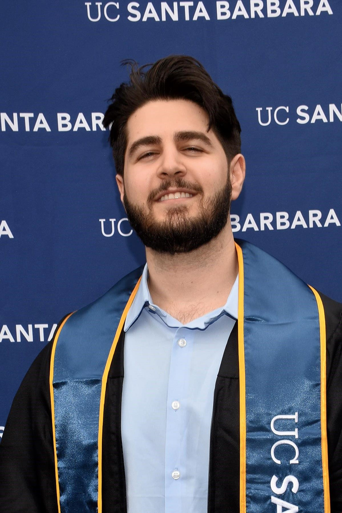

   <!-- Intro Section -->
   <section id="intro" class="container content-section text-center">
    
    <div class="row">
        <div class="col-lg-8 col-lg-offset-2" >
                <p></p>
                <h2>Intro</h2>
                <p>Sivar Azadi is a recent graduate from the University of California, Santa Barbara’s (UCSB) College of Letters and Science, receiving a Bachelor of Science in Physics with departmental honors.
                    <p>Sivar was previously an experimental particle physicist for the Lippincott Group at UCSB. He worked on the analysis of particle interactions and developed tools for automated data quality 
                        monitoring for the LUX-ZEPLIN (LZ) dark matter experiment. Sivar is currently pursuing personal projects as he searches for a data science or machine learning position.
                    </p>
            </div>
        </div>
    </div>
</section>